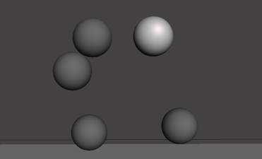
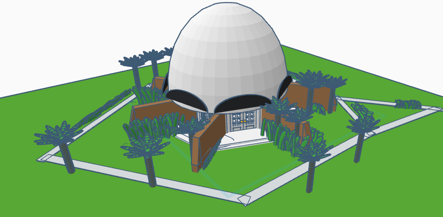
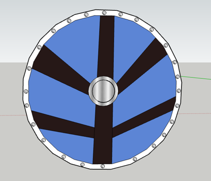
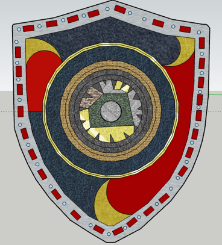
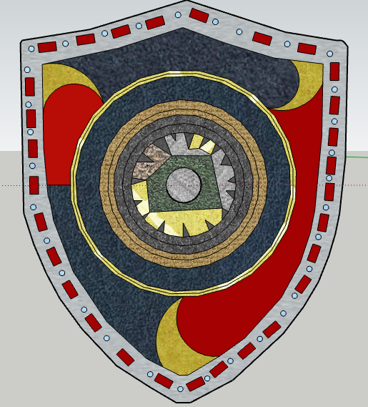
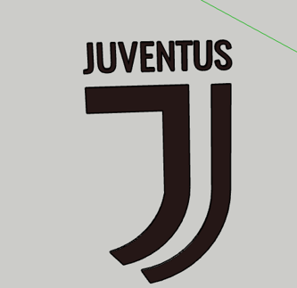

Diseños

Esferas en un plano (Meshmixer)
Este diseño fue creado utilizando Meshmixer, mostrando cómo las esferas pueden organizarse de manera precisa en un plano. La herramienta permite manipular geometrías complejas con facilidad, reflejando habilidades avanzadas en diseño.

Templo Bahá'í (Tinkercad)
Este diseño en CAD busca capturar la esencia de su arquitectura única, con líneas simples que evocan la armonía y el respeto por la naturaleza circundante. Cada detalle ha sido recreado con precisión, reflejando el simbolismo universal del templo como un lugar abierto para todos.

 

Escudos (SketchUp)
Diseños de escudos históricos y modernos, recreados en CAD con un enfoque en los detalles y acabados. El escudo vikingo muestra elementos rústicos y tradicionales, mientras que el escudo templario refleja un diseño clásico de la época medieval. Finalmente, el escudo inventado combina creatividad y funcionalidad en un diseño único.

Escudo de Fútbol
Este diseño captura la esencia del equipo Juventus, destacando su identidad visual. El trabajo en CAD permite detallar cada elemento del escudo para reflejar su elegancia y simplicidad.


Monedas (SketchUp)
Esta sección presenta diseños de monedas cuidadosamente recreados en CAD, destacando sus detalles artísticos y elementos históricos. La moneda de dos euros española refleja su importancia cultural y económica dentro de la Unión Europea, mientras que la moneda de 1 ban rumano destaca por su simplicidad y simbolismo nacional. Estos modelos capturan tanto los detalles en relieve como los acabados metálicos, mostrando las capacidades de diseño en precisión y realismo.
cara.png)
anverso.png)


Circuitos (Tinkercad)
En esta sección se presentan diferentes circuitos diseñados con Tinkercad. El primero es un circuito de amplificación de batería de 9V con un motor y un interruptor. El segundo incluye un buzzer y un inversor LED, que demuestran principios básicos de electrónica. Por último, un circuito con sensor de movimiento PIR y Arduino, ideal para aplicaciones de detección automatizada.


Brazos Robóticos (SketchUp)
Estos brazos robóticos están diseñados con una pinza mecánica o garra que imita la función de una mano humana para agarrar, sostener y manipular objetos. Suelen ser controlados mediante software o directamente por un operador y pueden tener múltiples grados de libertad para alcanzar posiciones específicas.
En lugar de usar una garra, estos brazos están equipados con un electroimán o imán permanente en su extremo, permitiendo levantar y manipular objetos metálicos sin necesidad de contacto físico directo.
.png)
.png)
Procesador (SketchUp)
Diseño detallado de un procesador Xeon E7 v2, enfocado en la representación precisa de sus componentes internos y externos.

Socket (SketchUp)
Modelo de socket LGA con representación fiel a los detalles técnicos, ideal para proyectos educativos o industriales.

Memoria RAM (SketchUp)
Modelo de memoria RAM diseñado con precisión para representar tanto su estructura como su funcionalidad.
Ingenieria En telecomunicaciones(Diseños)
La Ingeniería en Telecomunicaciones es una rama de la ingeniería que se enfoca en el diseño, desarrollo, implementación, y mantenimiento de sistemas y tecnologías que permiten la transmisión de información a través de diversos medios, como el aire, cables, fibras ópticas y redes digitales. Es fundamental en la era actual de la comunicación global y la conectividad.
Áreas clave de la Ingeniería en Telecomunicaciones:
Sistemas de comunicación:
Diseño y optimización de sistemas de transmisión como radio, televisión, telefonía, satélites y redes móviles.
Protocolos de comunicación como TCP/IP utilizados en Internet.
Redes y conectividad:
Diseño y gestión de redes de datos, incluyendo LAN, WAN y redes 5G.
Configuración y optimización de routers, switches y otros dispositivos de red.

Antena Parabólica (SketchUp)
Una antena parabólica utiliza un reflector parabólico para enfocar las señales electromagnéticas en un punto focal. Esto le da la capacidad de captar señales débiles a grandes distancias o transmitirlas con alta precisión. El receptor o transmisor se coloca en el foco del paraboloide.

Antena Yagi (SketchUp)
La antena Yagi es una antena direccional que consta de un elemento activo (un dipolo) y varios elementos pasivos, como directores y un reflector. Su diseño permite concentrar la energía de transmisión o recepción en una dirección específica, lo que mejora la ganancia y reduce la interferencia de otras fuentes de señal.